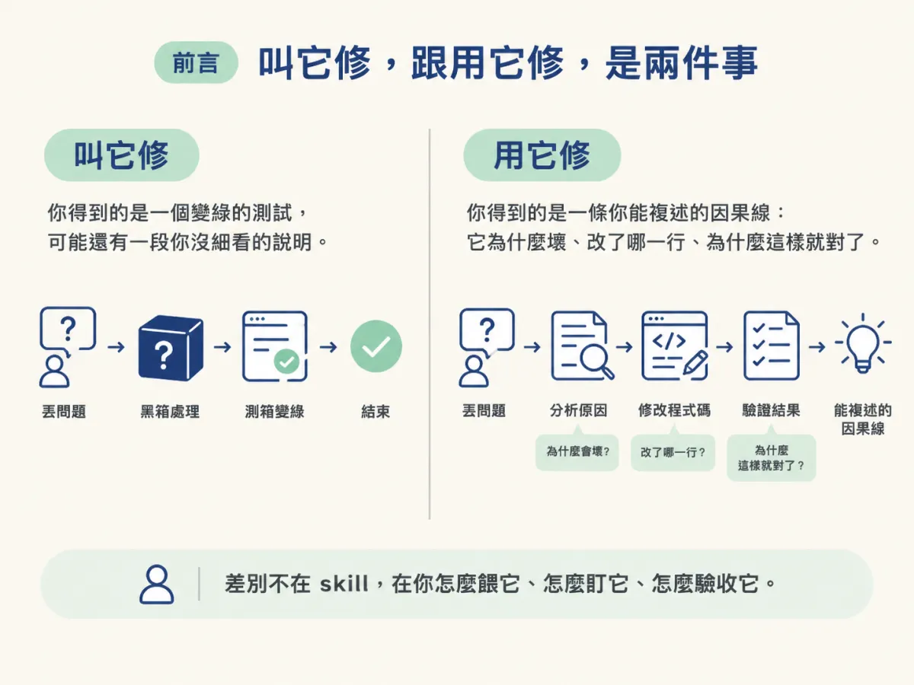
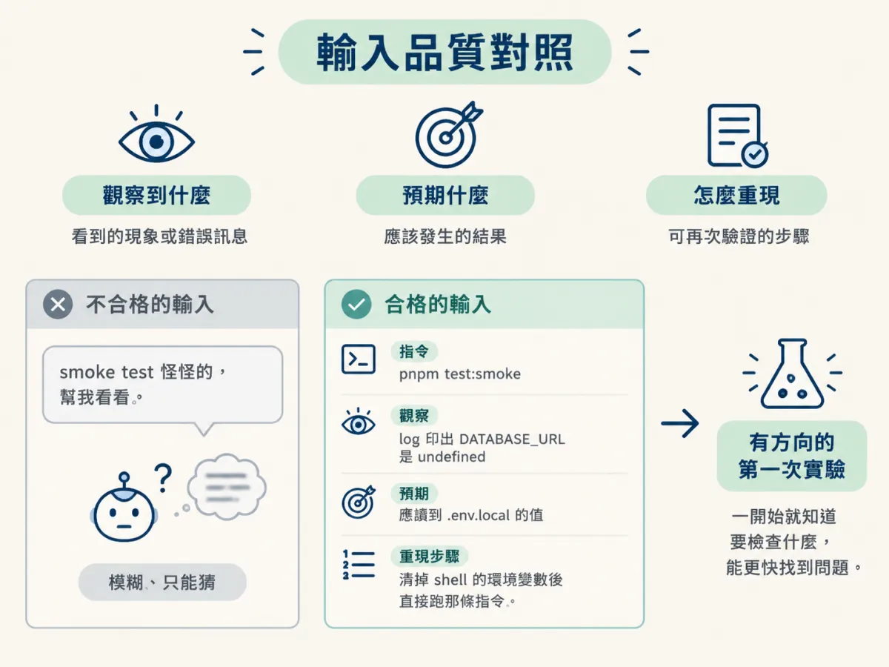
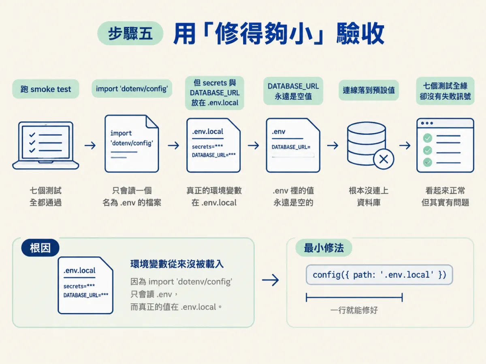
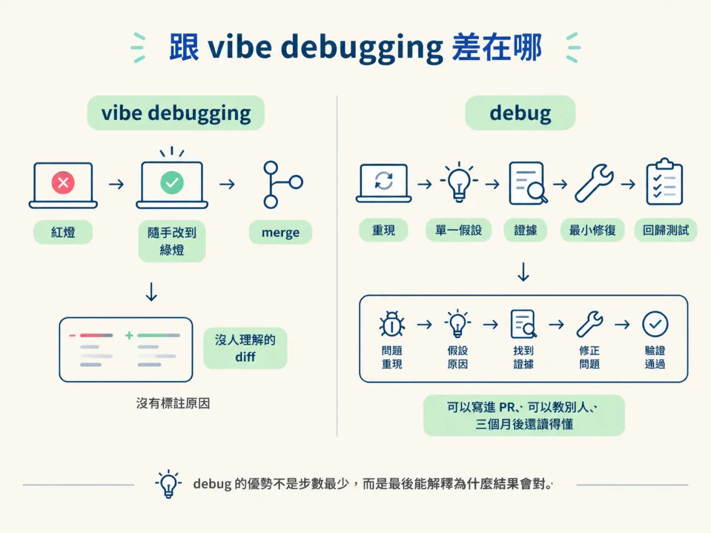
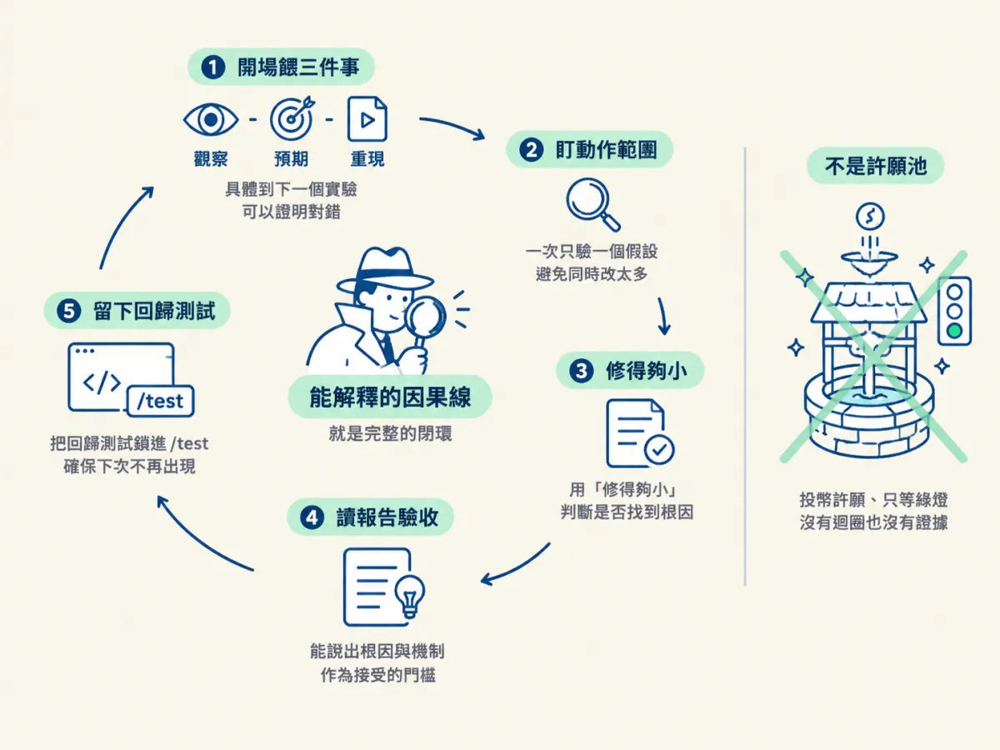

餵 debug skill 觀察、預期、重現這三件事，過程中盯住它一次只下一個假設，並用「修得夠小」判斷它是不是真的找到了根因。
你已經會方法了。現在把它交給 skill 去跑，因為它重現、定位、測試、修復、保護的速度比你快。但這裡有個很容易被忽略的差別：「叫它修」和「用它修」不是同一件事。
叫它修，你得到的是一個變綠的測試，可能還有一段你沒細看的說明。用它修，你得到的是一條你能複述的因果線：它為什麼壞、改了哪一行、為什麼這樣就對了。差別不在 skill，在你怎麼餵它、怎麼盯它、怎麼驗收它。

這一節照著 demo 的順序走一遍。Demo 裡講師跑的是 debug data model，而且他連三件事都不用給，因為前面跑的 check verify 已經把失敗抓出來、把證據留下來了。但你自己跑的時候通常沒這麼好運，所以這一節會把「怎麼餵」講得比 demo 更細。
三樣東西。第一，一個可觀察的失敗，不一定已經能穩定重現，但至少你知道「錯在哪、錯成什麼樣」。第二，一個跑得起來的專案，包含它的測試指令與環境變數。第三，一個乾淨的判斷：你已經確認這是普通 code bug，不是 agent 迷路。如果是後者，你該做的是處理 session，不是叫 debug 再試一次。
另外，如果你剛跑完 check verify，先去看它的報告。那份報告裡通常已經有 observed（哪個行為沒符合 spec）和 repro（怎麼操作會看到），你只需要補上 expected，就能直接開跑。
直接跑 debug。如果不帶參數，它會先問你 bug 的細節，因為它需要一個起點。這一步不要急著貼一大段程式碼，也不要只寫「壞了」。它問什麼，你就給什麼，而且給的是觀察，不是猜測。
如果你帶了目標，例如 demo 裡的 debug data model，它會直接鎖定那個範圍開始調查，不再多問。
這一步是整場調查快或慢的分水嶺。你要給的是三件事：你觀察到什麼、你預期什麼、怎麼重現。
少了這三件事，會發生什麼？講師在 demo 裡講得很直接：如果你只告訴它「這個壞了」，它就必須停下來跟你要證據。而它停下來跟你來回問答的時間，往往就是「快速調查」和「緩慢調查」之間的全部差別。
餵的時候要注意「具體到可以驗證」。不要說「資料庫有問題」，要說「DATABASE_URL 在 smoke test 裡讀出來是空的，所以連線用的是預設值」。差別在哪？前者讓它只能猜，後者讓它的下一個實驗可以證明這句話對或不對。講師的說法是：具體到下一個實驗能證明它是對的或錯的。
這裡有個很實際的對照。不合格的輸入：「smoke test 怪怪的，幫我看看。」合格的輸入：「跑 pnpm test:smoke 時七個測試都通過，但 log 裡 DATABASE_URL 印出來是 undefined；預期應該讀到 .env.local 裡的值；重現方式是清掉 shell 的環境變數後直接跑那條指令。」第二個版本讓它一開場就有方向，而且你能預期它會先去查環境變數是怎麼載入的。

如果它沒辦法重現，它不會硬修。它會停下來，試著加上額外的觀測工具，讓自己有能力重現，然後告訴你它加了什麼、發現了什麼。這一點值得你花三十秒確認：它加的是觀測（log、assertion、暫時的檢查），還是已經開始改行為？
前者是對的，因為它還在做 Step 1 和 Step 2。後者是警訊，代表它跳過了重現，直接進入猜測。
調查開始之後，你要盯的不是它的語氣，是它的動作範圍。判準很簡單：它這一個回合改的東西，是不是都指向同一個假設？
如果你看到它同時改了好幾個不相干的地方，然後希望錯誤就這樣消失，先停下來。那不是調查，那是散彈槍。講師的說法是：一次只做一個實驗、只帶一個資訊進去；只有在確認之後，它才可以動手修。
這也是為什麼「你必須真的去 review 它」不是客套話。你不需要跟著它一起推理，但你需要看得出來「這三個改動之間有沒有共同的假設」。看不出來，就問它：「這幾個改動分別在驗證哪一個假設？」它答不出來，你就知道它已經從調查滑向猜測了。
調查結束、它說找到根因了，這時候你要看的不是「測試有沒有變綠」，而是修復的大小。
Demo 裡有一個很漂亮的例子。當時的狀況是：七個 smoke test 看起來全都通過，但每一次跑都沒有任何失敗訊號。根因是環境變數從來沒被載入：smoke test 用了 import 'dotenv/config'，而這一行只會讀一個真的叫做 .env 的檔案；但這個專案把 secrets 放在 .env.local，DATABASE_URL 也在那裡。於是 .env 裡的值永遠是空的，測試跑起來當然不會有任何失敗訊號，因為它根本沒真的連上資料庫。

修法是把 .env.local 明確載入 smoke test。照 demo 描述的機制寫成程式碼，大概長這樣：
// 示範：把 .env.local 明確載入 smoke test
import { config } from 'dotenv';
config({ path: '.env.local' });這是示範，不是專案裡的原稿；重點是它的形狀：一行載入，指到正確的檔案。講師的評語是：這次修得好，因為改動的大小，真的就是一行。
為什麼「小」可以當作找到根因的訊號？因為真正的根因通常是一個很窄的錯誤：一個路徑寫錯、一個順序反了、一個值被當成另一種型別。當你找到它，修法自然就小。反過來，如果為了讓錯誤消失而改了六個檔案、加了三個判斷、繞過兩個檢查，那通常代表你還在處理症狀，只是把它們一個一個壓下去。
要注意這個訊號的適用範圍：它不是「小就一定對」。有些根因的修法本來就比較大（例如一個錯的資料模型，要動 schema 和幾個呼叫端）。但大而說不出因果的修，幾乎一定還沒到根因；小而說得出因果的修，才值得你接受。
它會給你一份報告，重點放在最前面。格式長這樣：
**Root cause: <the proven cause>. Fixed by <the minimal change, files touched>.**
Next: /test <feature> (lock in the regression test, added inline or handed over)中間那一行就是你要驗收的東西：它有沒有用一句話說出根因，以及那句話合不合理。如果那句話是「環境變數沒被載入，因為 smoke test 只讀 .env 而 secrets 在 .env.local」，你可以自己判斷它對不對。如果那句話是「修正了一些環境設定的問題」，那它其實沒有告訴你根因。
第二行是下一步：把回歸測試鎖進去。這一行不要跳過，因為沒有它，這個 bug 隨時可以安安靜靜地回來。
驗收的規則，跟這個節點最前面那條是同一條：不要接受一個你無法解釋的修好。 你可以問自己三個問題：我能說出它為什麼壞嗎？我能說出這個改動為什麼讓它不壞嗎？如果我只改回去這一行，它會不會又壞？三個都答得出來，這次才算真的修好。
一般的修 bug prompt 會鼓勵 agent「改到紅燈變綠燈」。有時候它真的會成功，你也真的會得到一個變綠的測試，然後結束，沒有任何解釋。講師把這個叫 vibe debugging。
debug 要求的是另一組東西：一個重現、一個假設、證據、最小修復、回歸測試。它的優勢不是步數最少。它甚至可能比你隨手改兩行還慢。它的優勢是你最後能解釋為什麼結果會對。
這個差別在專案變大之後會放大。vibe debugging 留下的是一段沒人理解的 diff；debug 留下的是一條可以寫進 PR、可以教給別人、可以在三個月後回頭看的因果線。

如果這個 bug 不單純，你可以讓調查跑在一個 subagent 裡，避免它大量的工具呼叫把你的主 context 塞滿。設定上有幾個重點：
- `model`: set explicitly to a strong model, do not inherit the session model (Claude Code: `sonnet`)
- `description: "Debug: <symptom>"`
- Tools: `Read`, `Bash`, `Grep`, `Glob`, `Edit`, `Write`有兩個地方要留意。第一，模型要明確指定成強的，不要繼承 session 的模型，因為除錯需要推理，而 session 可能為了省成本跑在比較小的模型上。第二，prompt 裡要放進這整套迴圈、你捕捉到的症狀、重現方式，以及相關的 AGENTS.md，並且要求它回報根因與證據，而不是只說「修好了」。
沒 review 就接受。 報告寫得很順，測試也綠了，於是你按了 merge。這是把判斷權整包交出去，而你才是那個要為這個修負責的人。
看到綠燈就慶祝。 尤其是那種「七個測試全過、但其實沒測到東西」的假綠。問一句：這些測試如果沒有這個修，會紅嗎？
省掉回歸測試。 這是唯一一個「現在不做、以後一定要付」的步驟。下次同一個 bug 回來，你會從零開始，而且這次沒有任何東西提醒你它回來過。
在迷路的 session 裡繼續 debug。 如果你發現它反覆改同一批檔案、diff 越改越大，那已經不是第一種壞了。停下來，把證據帶走，換一個乾淨的 session 再跑。
用 debug skill 的正確方式，是把它當成一個跑得比你快的調查員，而不是一個許願池。開場餵它三件事：觀察到什麼、預期什麼、怎麼重現，而且具體到下一個實驗可以證明對錯。過程中盯住它的動作範圍，看到它同時改好幾個不相干的地方就喊停。它回報之後，用「修得夠小」當作找到根因的訊號，用「我能不能解釋這條因果」當作接受的門檻，並且一定要把回歸測試留下來。它比一般修法強的地方不是步數少，是你最後能說出為什麼結果會對。

到這裡，這個節點的方法面就完整了：先分流、再對普通 bug 跑科學方法、最後用 skill 加速它。接下來遇到 agent 寫的程式時，還有一個額外的難題：你得先重建一個不屬於你的意圖。那是下一個節點的事。